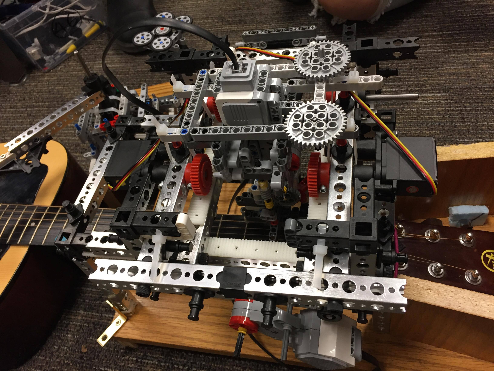
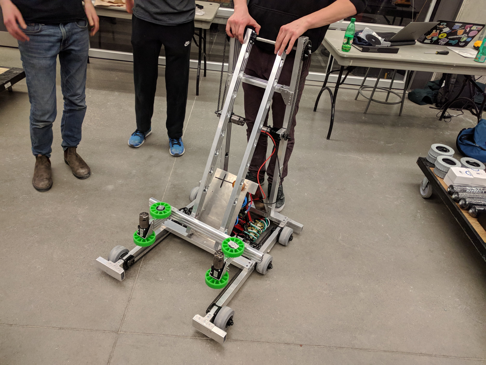
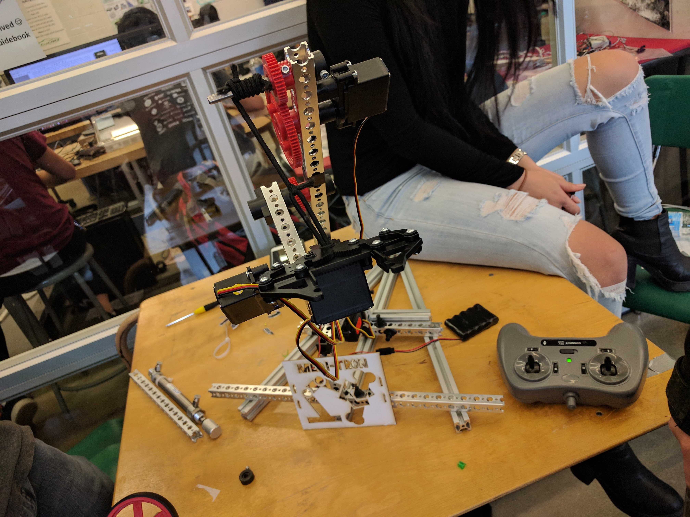

Welcome to my Online Portfolio



Hello! I am Connor Sweet, a 3A Computer Engineering student at the University of Waterloo. I am heavily interested in robotics, Operating systems, and full-stack development.
I am also an avid volunteer in the Waterloo region, having worked under the Honourable Bardish Chagger to improve the city's ecological footprint.
When I'm not busy, I will often be found producing and performing music, or putting a new idea into code.
I am currently searching for internship opportunities for the Winter of 2022!
Languages: C++, C, C#, Java, Javascript, Dart, Python, MATLAB, SQL, Bash, VB.NET, RISC-V, VHDL
Software Tools: Node.js, MS Bot framework, MS SQL Server, Git, Vim, Arduino, ROS, Linux, PLCs
Hardware Design: Solidworks, AutoCAD, GD&T, LTSpice
My most recent co-op term was with Mach7 Technologies, where I was once again given the opportunity to contribute to the medical field. Here, I attained skill in Dart application development, and created my own Javascript API to conduct performance tests on a clinical viewer.
After transferring to Computer Engineering, I was given an extra couple of co-op terms, which I am proud to have spent at Client Outlook Inc. Here, I have had the opportunity to create my own Dart applications from the ground up, develop PostMessage APIs for a medical viewer, and maintain Maven automation suites to validate viewer performance.
My second work term took me to the Canadian Tire Digital Innovation Lab at the Communitech Hub. Here, I honed my hardware development skills by building a robotic retail solution to optimize shelf space and provide fast customer transactions for seasonal items. This position helped me achieve adeptability in robotics development, through circuit fabrication, memory-efficient programming, and 3D printing.
For my first work term, I joined the Co-operators at their Kitchener Development Incubator to automate user processes and create communication channels between virtual robots and their users. Through this position I had the chance to explore server communication, databases and Artificial Intelligence.

As a project for the end of my 1A Mechatronics term, I worked as part of a group of four to design, create, program and test a robot which is able to plot and strum power chords on an acoustic guitar.

As a challenge presented to the UW Robotics Team, I worked alongside 3 other students to design and develop a line following electromechanical system which outputs various frequencies based on the shade on a line interpreted by a colour sensor.

I was accepted into Waterloo's Robot in 3 Days team, where 20 engineers came together to construct an entry for this year's First Robotics Competition under 72 hours.

The Tron Days Competition asked Mechatronics students to develop a remote-controlled robot arm capable of displacing objects across a pegboard. By taking the necessary steps to optimize construction we were able to achieve a score of 90% on arm design and efficiency.
EngHack is an annual hackathon held at the University of Waterloo for students to experiment with a multitude of hardware and software and attempt to build inventive solutions to real-world problems. My team opted to tackle the issue of home security and hone our hardware skills with Eagle Eye. We built a portable sensor box that transmits movement and audio data to a webservice for a user to view. The goal of the project is to help users monitor break-ins on their property.
During my time at Hack the North, I collaborated with three other programmers to develop a charity recommendation site. We are currently reviewing and updating the service for an official release.
I collaborated with two other students to develop this media application designed to play .mp3 and .wav files from a file directory.
The media application was constructed using Java and the JLayer library. It was programmed using multiple threads to allow for seamless audio playback while the GUI is in use.
As a summative project exiting my Grade 12 computer science class, I was asked to make a game using Java, implementing the object-oriented programming concepts we were taught. My goal was to create a clone of Hasbro's popular Risk board game.
When I first began experimenting with graphics in Java, I created a clone of the classic Arkanoid brick breaking game.
Every year the University of Waterloo competes for a position in the University Rover competition in Utah, where 30 teams use their rovers to attempt to recover objects in a desert landscape.
I've been making music my entire life, and my favourite hobby is to produce electronic beats using a variety of instruments, vocals, and effects. To the left are some of my recent songs!
Candidate for Bachelor of Applied Sciences, Class of 2023
Enrolled in Honours Computer Engineering, term 3A
Received High School Diploma, Graduated with Honours
Established and led several initiatives, including Student Council
I served as Co-President of my high school student council, as well as the Chair of the Media Production committee and Social Coordinator.
I also acted as a student activities liaison within Bluevale Collegiate's Parent Council, and attended provincial and national leadership conferences on the school's behalf.
I was approved entry into the Regional Youth Council in January 2017 and work with the other members to advocate for the youth voices of the Waterloo region.
Our work is delegated into 3 main subtopics: the Youth Initiative, Indigenous Rights, and Regional Sustainability.
I was a student senator in the Waterloo Region District School Board. I attended monthly meetings to discuss prevalent issues pertaining to youth in the region, such as mental well-being, and school budget allocation.
"Fed-Prov" allows high schools in the Kitchener Waterloo region to assume the role of a Province, Territory, or interest group in Canada. They meet at the University of Waterloo annually to discuss prevalent issues facing Canadians today from our role's perspective. Each year I acted in a different position, and have served in significant leadership positions for three of my years.
For my work as the leader of the Canadian Taxpayer Federation in the 50th annual conference I received the Outstanding Delegate Award. The following year, as the Premier of Saskatchewan, I received the John Boulden Award for Outstanding Premier .
Representing the United Kingdom of Great Britain and Northern Ireland, I debated the controversial issues of police brutality and the refugee crisis alongside other youth in the region. I helped reach adequate resolutions benefitting my delegation and won the Outstanding Delegate Award for my actions.
I co-founded this club as a means of promoting political engagement in the student body. In the club, a game of Civic Mirror was played, an online and in-class simulation where students are given a hidden political agenda and must accomplish their goals. I received a lot of positive feedback from club members, saying the club has encouraged them to remain politically aware.
I am happy to say that the Civics Club has outlived my time at high school and is currently being run by other successors at Bluevale Collegiate.
Grads as Gophers is a Bluevale tradition where a group of graduates are auctioned off as servants to grade nines for a week as a means of raising money for prom. The role entailed the development, choreography and performance of a musical number during the auction, and performing daily tasks for the grade nines, such as carrying them to class, buying them lunch, and helping them with homework.
I take vocal lessons at Russell Music Studios, where I study music theory and singing techniques. Since last year, I have regularly performed at coffee house shows hosted by the studio. I sing and play guitar, performing songs ranging from jazz, punk rock, and pop.
I have also performed in the annual Next Up! Showcase by IdeasExchange, and performed at the Cambridge City Hall for their Person's Day showcase.
I also regularly produce electronic music which I put on YouTube and SoundCloud. Lately I have begun working on original songs containing lyrics.
As a lawyer on the Mock Trial team, I represented clients in a court simulation as both a Crown and Defense attorney. This required me to research and collect evidence for both sides of the prepared case, while developing lines of questioning for my witnesses. Our team won the Regional Mock Trial Competition and participated in the Greater Toronto Area Mock Trial Competition.